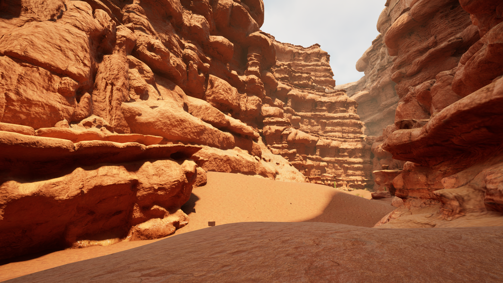
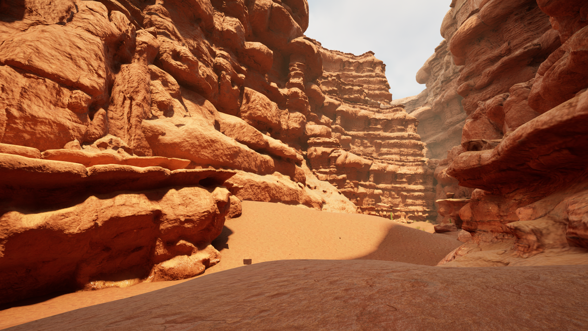
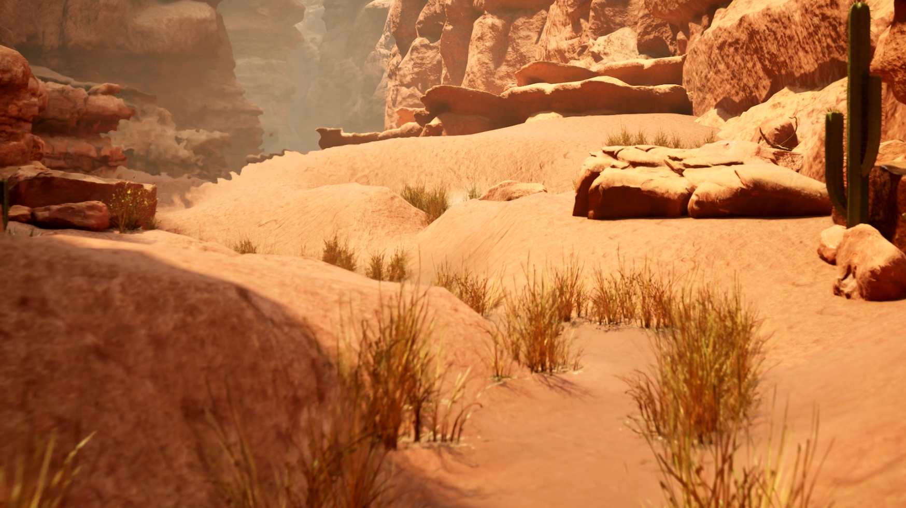
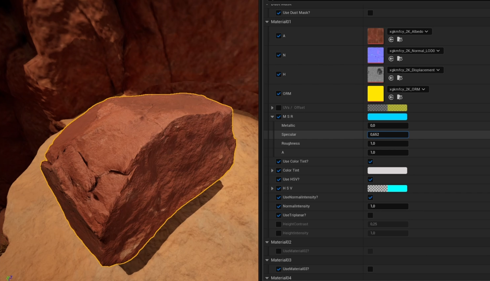
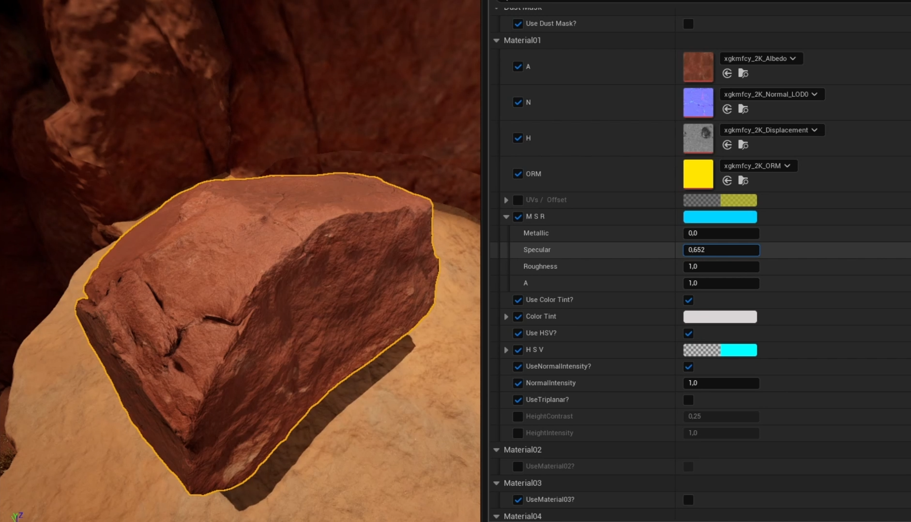

Desert Environment – Unreal Engine
 




For this semi-realistic desert environment, I put the focus on creating a flexible master material setup.
The master material is fully parametrized and adapts to all props and assets in the scene.
I also constructed a layered landscape material with a puddle painting feature,
to add wet areas and visual contrast in the landscape.
It was designed for modularity and easy customization across assets and terrain in an environment.
Features
- 🧱 Master materials for props and modular assets
- 🌄 Layered landscape material
- 💧 Puddle painting feature with blending
Development Highlights
- 🎛️ Fully parameterized materials
- ✏️ Custom vertex painting controls
- ⚙️ Optimized for performance and scalability